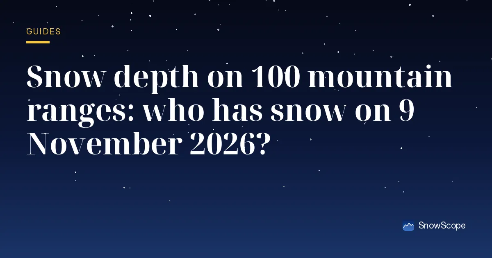
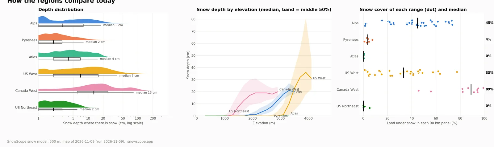

Snow depth on 100 mountain ranges: who has snow on 9 November 2026?
On 9 November, we mapped 100 mountain ranges across six continents and found snow already deep in Western Canada, modest in the Alps, and absent across the Pyrenees, the Atlas and the US Northeast. The SnowScope grid shows which ranges are white and which are still green, all at the same scale and colours.
See the live snow forecast for Alps in the SnowScope appSnow depth, powder alerts and the 3D map, free.

British Columbia's thick start
The Coast Mountains hold the season's deepest snow: 123 cm on 9 November. Whistler and the ranges nearby sit at 107 cm. At this early date, nearly nine in ten slopes across a typical Western Canadian range are already snow-covered, with continuous white beginning around 1400 m.
This is not a fluke of local terrain. The Coast Mountains and Whistler sit in a wet maritime climate where November snow arrives early and sticks. The snow here will grow through winter; by spring, depths in this region often triple.
Colorado and the high US West
The San Juans in Colorado have gathered 111 cm on the highest slopes. Aspen and Mt Baker both show 60 cm (24 in). Yet the picture is very different from Canada: snow sits high, starting at around 3200 m, and covers only about one third of a typical range. The thin, dry air of November in the US West means snow melts quickly at lower elevations and falls slowly in the valleys.
This setup—deep snow only above 3200 m—is why US ski seasons often begin later than the Canadian ones. The snow line will drop steadily through December and January as the season advances.
The Alps: early but shallow
The French Alps are the leaders in Europe today. The Vanoise holds 38 cm, the Ecrins 36 cm, and the Aosta Valley 29 cm. Yet these depths hide a truth: 45% of the median Alpine range is white, but where snow does lie, the typical depth is only 3 cm. Below about 2400 m, most slopes remain bare.
The Alps in early November face a simple problem: the air at lower elevations is still warm enough to melt what falls. Snow sticks only on the highest crests and north-facing slopes. As weeks pass and the sun angle drops, the snow line will descend and the whole region will fill in. For now, the Alps are a white top and green valleys.

Three regions with no snow
The Pyrenees show only 4% snow cover on 9 November, thin patches on the highest peaks only. All 10 Atlas ranges, from the Rif in Morocco to Siroua in the south, are completely bare. The US Northeast, from the Adirondacks to Killington, has zero snow cover. In total, 17 of the 100 ranges shown have no measurable snow on this day.
This is normal for early November. November snow in these regions is rare, and when it does fall, it rarely stays. December and January bring the real accumulation; until then, these ranges remain a resource for summer hiking or for resorts that use snowmaking.
How the grid works
Each square panel spans 90 km across the landscape and shows resolution of 500 m. Blue tones show how deep the snow is; grey shaded relief marks places with no snow. The number in the corner of each panel is the deepest snow recorded in that range on 9 November.
The coloured line under each panel tells you which region it belongs to—the same colours appear in the charts below the grid. Zoom into any range on the SnowScope map to see the snow day by day, follow the snow line as it descends through winter, and plan which height and which side of the valley to ski.
Tips for skiers
- Early season snow sits high: in the Alps, continuous cover begins above 2400 m; in the US West, above 3200 m. If you plan to ski in November, go high.
- Western Canada is the safest bet for depth and stability right now; 89% cover and 123 cm in the Coast Mountains mean long-term skiable snow.
- In the US West, check whether your chosen resort sits above or below the 3200 m snow line; if below, you may find patchy coverage.
- Open the SnowScope map and follow any of these 100 ranges day by day to watch the snow line drop as winter progresses.
About these numbers
Resort snow depths are the deepest snow on the resort's upper slopes on the date shown; they are estimates for an area, not a measurement at one point. Forecasts can change. Always read the official avalanche bulletin before going off-piste.
Cite this report
For research, teaching or the press: the numbers and charts are free to reuse under CC BY 4.0 with this citation.
SnowScope (2026), Snow depth on 100 mountain ranges: who has snow on 9 November 2026?, https://snowscope.app/blog/en/2026/11/snow-depth-100-mountain-ranges-9-november-2026.html, accessed 2026-11-09
SnowScope (Atlas Labs). (2026, November 9). Snow depth on 100 mountain ranges: who has snow on 9 November 2026?. SnowScope snow reports. https://snowscope.app/blog/en/2026/11/snow-depth-100-mountain-ranges-9-november-2026.html
BibTeX
@misc{snowscope2026snowdepth100mountainrang,
author = {{SnowScope (Atlas Labs)}},
title = {Snow depth on 100 mountain ranges: who has snow on 9 November 2026?},
year = {2026},
month = nov,
howpublished = {\url{https://snowscope.app/blog/en/2026/11/snow-depth-100-mountain-ranges-9-november-2026.html}},
note = {Published 2026-11-09 21:24 UTC; accessed 2026-11-09}
}· CC BY 4.0 · Methods, data and tools →
Follow Alps
Free: a message when fresh snow is coming, and the forecast every morning.
More snow reports

Snow on 3 November 2026: Kendall Mountain 53 in (134 cm) after a storm, Big White 91 cm, the Alps up to 55 cm at Bonneval-sur-Arc.

Chabanon leads the Alps with 37 cm forecast in 72 hours. Mt Baker tops the US West with 11 in (28 cm). Ski Callaghan heads Canada with 33 cm by 6 November.

Whistler Blackcomb sits at 27 cm on 5 November, only 41 per cent of normal for this date. A major system brings 22 cm snow in the next 24 hours.